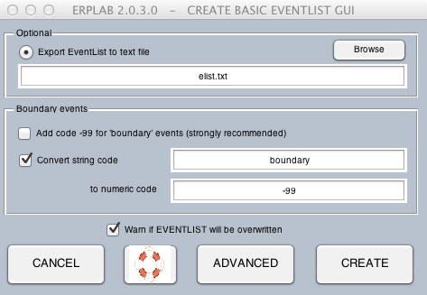
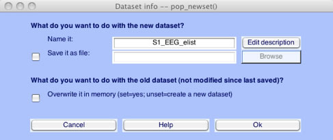
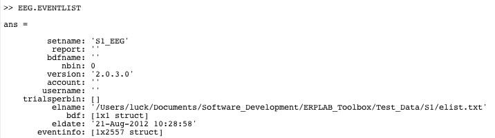
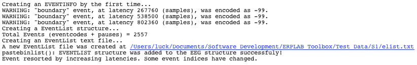

We are now ready to get into the ERPLAB functions. We will begin with some housekeeping, then do artifact rejection, and finally averaging.
The event codes are embedded in a dataset within EEGLAB's EEG structure, which is pretty complicated. To make it easier to see and manipulate the event codes, ERPLAB creates an EventList, which is a list of all of the event codes and associated information. Internally, ERPLAB stores this as an EVENTLIST structure (which is appended onto the EEG structure as EEG.EVENTLIST). But the EventList can also be saved in a text file, where you can easily see and manipulate the event information. If you make any changes, you can import it back into the EEG structure. We will show an example of this later in the tutorial.
To use ERPLAB, you must create an EventList for the EEG stored in your dataset using ERPLAB > EventList > Create EEG EVENTLIST. A screenshot of the window for this command is shown below.

In most cases, you will simply click the Create button. However, to get a better idea of what an EventList is, select the option Export EventList to text file and enter a filename of "elist.txt". If you just type "elist.txt" into the text field, it will save this file in Matlab's current folder. If you want to put it somewhere else, you can use the Browse button. Once you've entered the filename, you can click the Create button to create the EVENTLIST.
Equivalent Script Command:
% Create an EventList, saving a text version in a file named 'elist.txt' in Matlab's current folder
EEG = pop_creabasiceventlist( EEG , 'Eventlist', 'elist.txt', 'Newboundary', { -99 }, 'Stringboundary', { 'boundary' }, 'Warning', 'on' );
This will create the EVENTLIST structure and add it onto the current EEG structure and creating a new dataset. Any operation that creates a new dataset will put up the window shown in the next screenshot, which gives you some options for saving the new dataset. First, you need to specify a name for the new dataset. This name will be stored inside the dataset, and it will be shown in the Datasets menu. It is not necessarily the same as the name of the file in which the dataset is stored on disk, but we recommend that you use the same name for the file (if you save it as a file on disk). ERPLAB will automatically suggest a name for the dataset, appending a string onto the end of the name of the dataset from which the new dataset was created. When an EventList is generated, it suggests adding "_elist" onto the dataset name (going from "S1_Chan" to "S1_Chan_elist"). This is not required, but it is recommended (otherwise you will have a hard time remembering what is in a given dataset. If you check the Save it as file button and use the Browse button to select a filename, the dataset will be saved to disk. You can also choose to either keep the previous dataset in the Datasets menu (this is the default) or overwrite the previous dataset in this menu.

We find that it is usually a good idea to save the dataset to disk after you've gone through several steps; otherwise all your work will be lost if the program crashes. And you should obviously save to disk if you are going to quit the program and you don't want to lose what you've created. However, it usually isn't necessary to save every dataset you create – this ends up leading to a lot of big files on your hard drive. Also, we don't usually overwrite the previous dataset, because then we can't easily back up to the previous step. However, there are no hard-and-fast rules here; you will eventually develop a set of habits that make sense for your own needs.
There are two ways to see the EventList that you just created. The first is to type EEG.EVENTLIST in the Matlab command window. If you do, you'll see something like the following:

If you have some Matlab experience, you can drill further into this structure to see what it contains. However, it is easier just to open the text file that you created (elist.txt). You can open it in any text editor, but the easiest thing is to open it in Matlab's text editor. When it was created, ERPLAB put a link to the file in the Matlab command window, as shown by the underlined blue text in the following screenshot. You can just click on this link, and the file will open.

Take a look at this file to see that it has all the event code information.
| <<Background Concepts | Table of Contents | Advanced EventList Options>> |